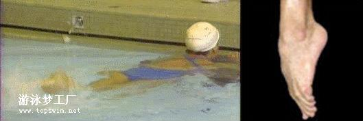
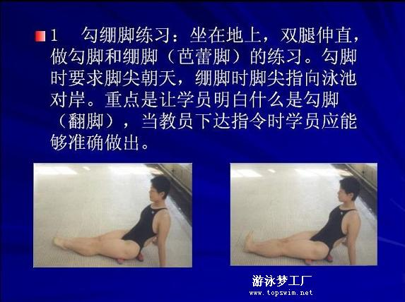
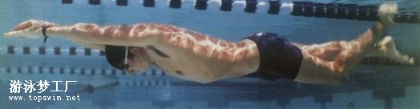
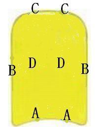
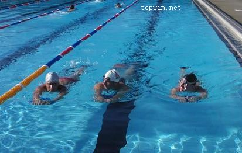
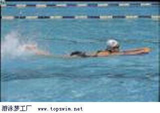

1. 爬泳腿的重点是以髋为轴，学习的难点是大腿带动小腿，交替协调的鞭状动作。
2. 做直腿打水有助于体会大腿带动小腿的动作,不要急于过渡到屈腿打水。
3. 打水髋关节要展开，踝关节要放松。
4. 爬泳打腿练习枯燥易累，宜多变换方式和方法。如陆上坐、卧交替；扶边打水快、慢交替；漂浮打水可单、双臂在前与双臂在后交替练习。
随着打水距离的增长，要与呼吸结合。
打水的幅度约30～40公分，脚背贴着水面往下压即可，两腿交替协调，力量要平均，幅度不要过大。保持膝、踝关节的柔软。抬腿的幅度不要太高,脚背贴着水面即可,不要屈膝离水太高。注意看一下脚踝的动作!


常见错误动作和纠正方法：
1. 大腿不动，屈膝过大，用小腿打水－－原因是打腿动作概念不清，小腿过分用力。 练习时可用直腿打水矫正，体会大腿带动小腿的动作， 同时应注意观察正确的示范动作。
2. 屈膝打水－－原因是躯干未充分展开或收腹。 水中练习时，注意大腿上摆。 陆上练习时可俯卧凳上，做直腿打水练习，注意上抬大腿的动作，膝部不触凳。
3. 打水时前后抖动－－原因是打腿动作概念不清，两脚像踩脚踏车似的前后踩水。 练习时可用直腿打水矫正，腿是上下摆动而不是前后抖动。
4. 勾脚尖打水－－原因是动作过分紧张或踝关节灵活性差。 可多做踝关节灵活性练习，打腿时要求绷直脚尖。
柔软的踝关节对打水能产生很好的效果，成年人需循序渐进长时间地有意识练习这些动作。

踝关节环绕练习,可以有助于拉长韧带。大幅度的顺时针、逆时针转动踝关节,转动时手可以稍加阻力,每个方向转动10～20次。

脚蹼基本知识和介绍
脚蹼的唯一用途和与之相关的训练是帮助你进行游泳锻炼和享受游泳的乐趣。脚蹼有助于提高自由泳、仰泳和蝶泳的游泳技术。至于蛙泳和蝶泳，理想的训练是用脚蹼帮助学习波浪式动作。
很多脚蹼都是用天然橡胶制成的（艾姆迈特 海尼斯称它们是“气味难闻的橡胶脚”）。但也有些是用高密度、经过热处理的聚氨脂制成，更经久耐用。
你可以在两种脚蹼之间进行选择，一种是短的训练用脚蹼，蹼片长1-2英寸，一种是标准规格的脚蹼（蹼片粗糙，长度和脚长相同）。标准规格脚蹼只适合蝶泳和学习波浪泳（蛙、蝶）。短脚蹼最适合自由泳和仰泳的打水，因为短脚蹼容许正常打水的频率。当然你也可以用于蛙泳和蝶泳，或者学习波浪蛙泳时使用[见如何学习波浪泳]。
避免使用坚硬的不易弯曲的脚蹼，蹼片不能宽于脚宽的一倍和一倍半，长度不能长于脚。
如何使用脚蹼
脚蹼延长了脚和腿的长度，使你打水更有效率，速度更快。实际上，在短冲训练中使用脚蹼有助于使身体处于更流畅的状态[更多内容见“短冲加力训练”]。另外，你将会得到很多的回报，体验到好的打水水感。但是：某些游泳者并没意识到他们的膝关节弯曲得太大了，实际上，他们是用弯曲膝关节打水取代了用髋部发力打水。另外，多数游泳者信赖象踢足球一样向下击水，向上踢水也会起到推进作用？脚，真是让人费脑筋！
当你决定戴脚蹼开始打水时要慢，让肌肉群有时间适应它。
自由泳抬头打水练习
抬头会影响身体的流线型,阻力就增加了,所以头不需要抬很高,可以轻松吸到气即可..
1. 可以先把头埋进水里去,等到要吸气时再抬头,但抬头同时最好不要中断打水节奏, 吸到气后再放回水里去,这样的要求应该还不至于太难....
2. 再来是把换气次数增加一些,就是多做第1点说的打水换气的动作, 这样的话因换气而延迟的现象就可以少很多了....
3. 然后就是把头持续的保持在水面上也可以了,也不至于影响打腿了...
腿的动作通过踝关节的灵活性保持内收、展屈,使脚以最大面积向后打水

扶浮板练打腿，是提高打腿技术行之有效的好办法：

练到能象他们那样轻松抬头打，打腿功基本过硬了。

下一步，抬头扶板打腿，熟练后，每次游泳都练个一百几十米，很有好处。

踢腿篇
捷泳的脚打水是一项非常难的技术。并非一朝一夕就可以学成。
以儿童的学员来说，只是单纯的打水前进动作，都要大约花一个月的时间才能够有所进展。
更何况，想要进步到可以确实地做到，用腰部带动前进的有力打水动作，更是要花上好几年的功夫。
不过即便是用像培训选手那样的课程来训练，也不见得就可以做得很好。
那么到底要怎样打水才可以确实地进步呢?
就是要做到无意识似的打水动作，才是理想的。
在打水时，要做到一次比一次能感觉出有力的前进，那样的打水就是正确的。
不只是说要达到快速打水就可以了。打水的标准是要像鱼一般。
＜脚踝＞
要做到像鱼般地打水，首要的就是脚踝的柔软度。
将脚尖打直，脚踝也打直的状态下，这时脚尖不能变为弯曲。
两脚上下轻松打水。如果这时脚踝变弯曲的话，就证明了脚的力量没有放掉。
不过即使这个动作做得很好，就说可以打水快速前进了的话，也还言之过早。
＜膝＞
膝盖不可以弯曲打水。
弯曲的打水，推进力的方向是往下，只会造成水花四溅的。
如果在练习时感觉到腿部酸痛的话，就是用膝盖打水过度。
不过，也不是说要一直膝盖保持直直的打水，那样也不对。
用口语来说，恰当地弯曲，慢慢地弯曲，这样的感觉吧?
不过不要让膝盖意识到弯曲地打水。直到由打水中体会出个中微妙地弯曲感觉。
＜腿＞
那么不用膝盖打水，要用那里打水呢?
就是要用大腿带动小腿打水。这一点非常重要。
虽然用大腿带动地打水，总有一些像是机器人的味道，但是并不是要像机器人一样的打水。
要无意识般地打水。
即，打水由大腿开始→带动膝盖→传到脚踝、这样的连动打水。
我看，应该常有很多人在练完打水之后感到屁股的肌肉酸痛，那多半都是打水的动作不正确。
＜腰＞
大部份的运动，像棒球也是，腰是很重要的。在打水的动作中，腰也扮演着重要角色。
打水虽是由大腿来带动，要是加上腰的配合，就更能够流畅地打水了。
不过初学者一开始就加入摆腰的话，就会变得打水软绵绵的。还是等到打水学到一定的程度之后，再意识到腰部动作吧。
那么腰要怎么动才好呢?本来捷泳就是一种围绕着身体纵轴回转滚动的泳姿。
将这个滚动连结到打水的动作。
通常的打水是采六拍，就是手的动作左右划水一次，脚要打水六下。
接着，要在六次打水中加入腰部动作，不用说当然是平均分配，要在
腰部左右回转滚动时，技巧的加入在六次打水其中的两次。
这两次的打水放在什么时机是非常重要的，详细在后面踢腿与划手的配合时再详谈。
打水的时候要汇总地观察一下各个动作，这是提升自己技术的确认方法。用坐着的方式可以容易观察。
坐在游泳池畔上下打水，依打出的水泡可供确认。
如果只有小水花，可以打出很多泡沫的话就很好。脚踝要能上下灵活摆动。
如果有水花四浅的感觉，就是代表脚踝关节太硬伸展得过度。
相反地，脚踝非常地弯曲的话，就可以从水面上直接看到脚指头，这也是不好。。
高明的打水就是，脚从水面踢出时，水就像盖在脚上的毯子一样。
多做坐姿打水，直到这样的程度吧。
可以体会想要马上游泳的心情，不过连铃木大地(前奥运选手)的教练，也是经过充分的池畔打水练习呢。
很多的大学生们也是从都从坐姿打水练习开始，不善打水的人更应该多加练习。
汇总…打水不是用膝盖，而是用腿，要练到像无意识般地打水。